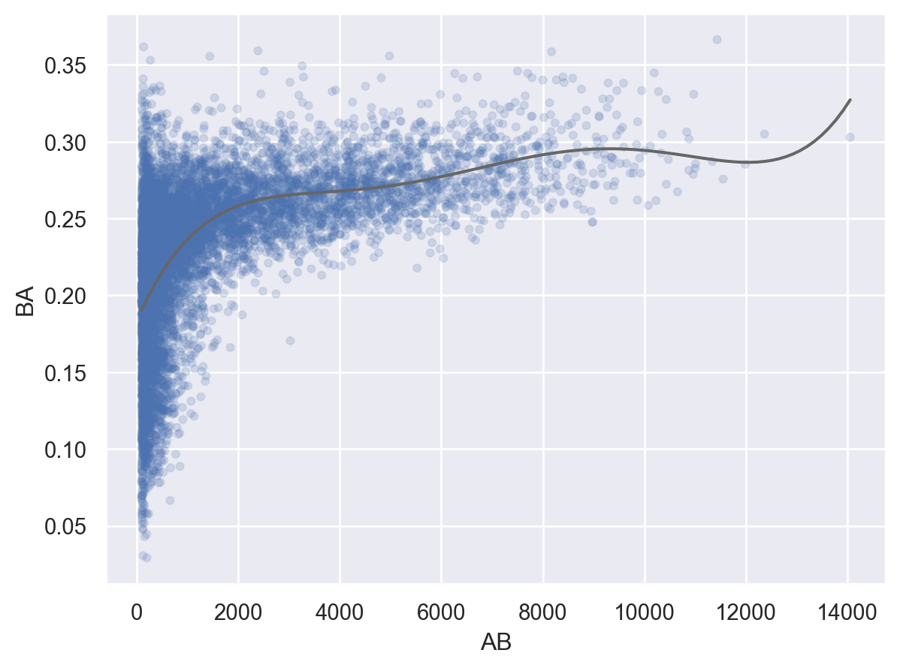

# numerical calculation & data framesimport numpy as npimport pandas as pd# visualizationimport matplotlib.pyplot as pltimport seaborn as snsimport seaborn.objects as so# statisticsimport statsmodels.api as sm# pandas optionspd.set_option('mode.copy_on_write', True) # pandas 2.0pd.options.display.float_format ='{:.2f}'.format# pd.reset_option('display.float_format')pd.options.display.max_rows =7# max number of rows to display# NumPy optionsnp.set_printoptions(precision =2, suppress=True) # suppress scientific notation# For high resolution displayimport matplotlib_inlinematplotlib_inline.backend_inline.set_matplotlib_formats("retina")
Q1
각 도착지에 따른 비행거리(distance)와 도착지연시간(arr_delay)와의 관계를 알아보고자 함.
Group flights by destination.
Summarise to compute distance, average delay, and number of flights.
Filter to remove noisy points and Honolulu airport, which is almost twice as far away as the next closest airport.
# Load the nycflight13 datasetflights = sm.datasets.get_rdataset("flights", "nycflights13").data.drop(columns="time_hour")
# grouping by destinationsby_dest = flights.groupby("dest")
playerID yearID stint teamID lgID G G_batting AB R \
0 aardsda01 2004 1 SFN NL 11 11 0.00 0.00
1 aardsda01 2006 1 CHN NL 45 43 2.00 0.00
2 aardsda01 2007 1 CHA AL 25 2 0.00 0.00
... ... ... ... ... ... ... ... ... ...
95192 zwilldu01 1914 1 CHF FL 154 154 592.00 91.00
95193 zwilldu01 1915 1 CHF FL 150 150 548.00 65.00
95194 zwilldu01 1916 1 CHN NL 35 35 53.00 4.00
H ... SB CS BB SO IBB HBP SH SF GIDP G_old
0 0.00 ... 0.00 0.00 0.00 0.00 0.00 0.00 0.00 0.00 0.00 11.00
1 0.00 ... 0.00 0.00 0.00 0.00 0.00 0.00 1.00 0.00 0.00 45.00
2 0.00 ... 0.00 0.00 0.00 0.00 0.00 0.00 0.00 0.00 0.00 2.00
... ... ... ... ... ... ... ... ... ... ... ... ...
95192 185.00 ... 21.00 NaN 46.00 68.00 NaN 1.00 10.00 NaN NaN 154.00
95193 157.00 ... 24.00 NaN 67.00 65.00 NaN 2.00 18.00 NaN NaN 150.00
95194 6.00 ... 0.00 NaN 4.00 6.00 NaN 0.00 2.00 NaN NaN 35.00
[95195 rows x 24 columns]
# AB: At Bats 타석에 나선 횟수, H: Hits; times reached base 출루한 횟수batters = batting.groupby("playerID")[["H", "AB"]].sum()batters = batters.assign( BA =lambda x: x.H / x.AB # BA: batting average 타율)batters
H AB BA
playerID
aardsda01 0.00000 3.00000 0.00000
aaronha01 3771.00000 12364.00000 0.30500
aaronto01 216.00000 944.00000 0.22881
... ... ... ...
zuvelpa01 109.00000 491.00000 0.22200
zuverge01 21.00000 142.00000 0.14789
zwilldu01 364.00000 1280.00000 0.28437
[17661 rows x 3 columns]
# filtering없이 보았을 때와 비교해서 어느 정도 제외할지 고민( so.Plot(batters.query('AB > 100'), x="AB", y="BA") .add(so.Dots(alpha=.1)) .add(so.Line(color=".4"), so.PolyFit(5)))

# 1번 기회를 얻은 타자... 타율 100%batters.sort_values("BA", ascending=False).head(10)
H AB BA
playerID
paciojo01 3.00 3.00 1.00
gallaja01 1.00 1.00 1.00
sellsda01 1.00 1.00 1.00
... ... ... ...
kehnch01 2.00 2.00 1.00
devinha01 2.00 2.00 1.00
liddeda01 1.00 1.00 1.00
[10 rows x 3 columns]
Exercises
A
다음 조건을 만족하는 항공편을 필터링 해보세요. (1~6)
Had an arrival delay of two or more hours
Flew to Houston (IAH or HOU)
Departed in summer (July, August, and September)
Arrived more than two hours late, but didn’t leave late
Were delayed by at least an hour, but made up over 30 minutes in flight
출발할 때 예정시간보다 1시간 이상 지연되어 출발하였으나 빠르게 비행하여 출발 지연된 시간보다 도착 지연이 30분이상 단축된 항공편들입니다. (예를 들어, 1시간 늦게 출발했는데, 도착은 28분 지연된 항공편)
Departed between midnight and 6am (inclusive)
Find the fastest flights.
Sort flights to find the most delayed flights. Find the flights that left earliest (예정시간보다 가장 일찍 출발한).
Which flights travelled the farthest? Which travelled the shortest?
각 도착지 별로, 뉴욕에서 출항한 항공편이 1년 중 몇 일 있었는가?
뉴욕에서 1년 중 300일 이상 출항하는 도착지들을 구하면?
B
Our definition of cancelled flights (dep_delayorarr_delay is missing) is slightly suboptimal. Why? Which is the most important column?
예를 들어, 출발지연은 missing이 아니나 도착지연은 missing인 것이 있음
Look at the number of cancelled flights per day. Is there a pattern? Is the proportion of cancelled flights related to the (daily) average delay?
취소되는 항공편들이 많은 것과 관계 있는 것은 무엇이 있을까…
What time of day should you fly if you want to avoid delays as much as possible?
For each destination, compute the total minutes of delay. For each flight, compute the proportion of the total delay for its destination.
Find all destinations that are flown by at least two carriers. Use that information to rank the carriers.
즉, 적어도 두 항공사가 출항하는 도착지들도 한정한 후,
다양한 곳으로 출항할수록 높은 순위의 항공사라고 보고, 항공사들의 순위를 정해봄
C
Challenges:
Which carrier has the worst arrival delays? Challenge: can you disentangle the effects of bad airports vs. bad carriers? Why/why not?
항공사(carrier)마다 취항하는 곳에 차이가 날 수 있다면, 그건 그 노선 혹은 공항의 문제이지 항공사의 문제는 아닐 수도 있음을 암시하는 것임
Which plane (tailnum) has the worst on-time record?
on-time을 적절히 정의한 후에 진행; 여러 방식이 있을 수 있음
예를 들어, 늦게 도착하지 않은 항공편의 “갯수”로 보거나
도착지연의 평균값을 기준으로 볼 수도 있음
Look at each destination. Can you find flights that are suspiciously fast? (i.e. flights that represent a potential data entry error).
빠르게 비행한 이유: 제트 기류? 정체가 심한 공항?…
같은 루트를 비행하는 항공편들 안에서 특이점이라면 의심해 볼만함…
서로 다른 루트를 비행하는 항공편들과의 비교는?
빠르다는 것을 비교하려면 동일한 루트에서 비교해야 적절함
다른 루트의 항공편들까지 같이 비교하려면 어떤 방식이 있겠는가?
Compute the air time of a flight relative to the shortest flight to that destination. Which flights were most delayed in the air?
“상대적”의 의미가 값의 차이로 볼지 비율의 차이로 볼지도 고려해 볼 것
** For each plane, count the number of flights before the first delay of greater than 1 hour.